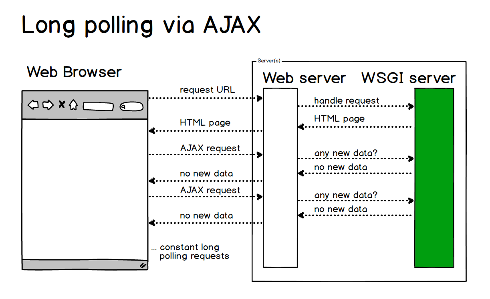

A WebSocket is a standard protocol for two-way data transfer between a client and server. The WebSockets protocol does not run over HTTP, instead it is a separate implementation on top of TCP.
A WebSocket connection allows full-duplex communication between a client and server so that either side can push data to the other through an established connection. The reason why WebSockets, along with the related technologies of Server-sent Events (SSE) and WebRTC data channels, are important is that HTTP is not meant for keeping open a connection for the server to frequently push data to a web browser. Previously, most web applications would implement long polling via frequent Asynchronous JavaScript and XML (AJAX) requests as shown in the below diagram.

Server push is more efficient and scalable than long polling because the web browser does not have to constantly ask for updates through a stream of AJAX requests.

While the above diagram shows a server pushing data to the client, WebSockets is a full-duplex connection so the client can also push data to the server as shown in the diagram below.

The WebSockets approach for server- and client-pushed updates works well for certain categories of web applications such as chat room, which is why that's often an example application for a WebSocket library.
Both the web browser and the server must implement the WebSockets protocol to establish and maintain the connection. There are important implications for servers since WebSockets connections are long lived, unlike typical HTTP connections.
A multi-threaded or multi-process based server cannot scale appropriately for WebSockets because it is designed to open a connection, handle a request as quickly as possible and then close the connection. An asynchronous server such as Tornado or Green Unicorn monkey patched with gevent is necessary for any practical WebSockets server-side implementation.
On the client side, it is not necessary to use a JavaScript library for WebSockets. Web browsers that implement WebSockets will expose all necessary client-side functionality through the WebSockets object.
However, a JavaScript wrapper library can make a developer's life easier by implementing graceful degradation (often falling back to long-polling when WebSockets are not supported) and by providing a wrapper around browser-specific WebSocket quirks. Examples of JavaScript client libraries and WSGI implementations are found below.
Socket.io's client side JavaScript library can be used to connect to a server side WebSockets implementation.
web-socket-js is a Flash-based client-side WebSockets implementation.
Nginx officially supports WebSocket proxying as of version 1.3. However, you have to configure the Upgrade and Connection headers to ensure requests are passed through Nginx to your WSGI server. It can be tricky to set this up the first time.
Here are the configuration settings I use in my Nginx file as part of my WebSockets proxy.
# this is where my WSGI server sits answering only on localhost # usually this is Gunicorn monkey patched with gevent upstream app_server_wsgiapp { server localhost:5000 fail_timeout=0; } server { # typical web server configuration goes here # this section is specific to the WebSockets proxying location /socket.io { proxy_pass http://app_server_wsgiapp/socket.io; proxy_redirect off; proxy_set_header Host $host; proxy_set_header X-Real-IP $remote_addr; proxy_set_header X-Forwarded-For $proxy_add_x_forwarded_for; proxy_http_version 1.1; proxy_set_header Upgrade $http_upgrade; proxy_set_header Connection "upgrade"; proxy_read_timeout 600; } }
The following resources are also helpful for setting up the configuration properly.
Nginx has an official page for WebSocket proxying.
WebSockets in Nginx walks through the Nginx WebSockets configuration directives.
Proxying WebSockets with Nginx shows how to proxy with Socket.io.
The python-websockets-example contains code to create a simple web application that provides WebSockets using Flask, Flask-SocketIO and gevent.
The Flask-SocketIO project has a chat web application that demos sending server generated events as well as input from users via a text box input on a form.
The official W3C candidate draft for WebSockets API and the working draft for WebSockets are good reference material but can be tough for those new to the WebSockets concepts. I recommend reading the working draft after looking through some of the more beginner-friendly resources list below.
WebSockets 101 by Armin Ronacher provides a detailed assessment of the subpar state of HTTP proxying in regards to WebSockets. He also discusses the complexities of the WebSockets protocol including the packet implementation.
The "Can I Use?" website has a handy WebSockets reference chart for which web browsers and specific versions support WebSockets.
Mozilla's Developer Resources for WebSockets is a good place to find documentation and tools for developing with WebSockets.
Real-time in Python provides Python-specific context for how the server push updates were implemented in the past and how Python's tools have evolved to perform server side updates.
The Choose Your Own Adventure Presentations tutorial uses WebSockets via gevent on the server and socketio.js for pushing vote count updates from the server to the client.
Async with Bottle shows how to use greenlets to support WebSockets with the Bottle web framework.
If you're deploying to Heroku, there is a specific WebSockets guide for getting your Python application up and running.
The Reddit thread for this page has some interesting comments on what's missing from the above content that I'm working to address.